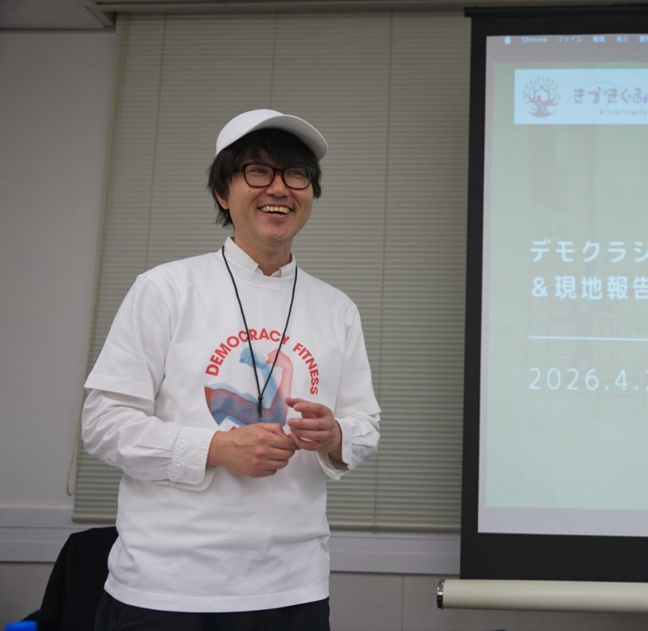

新入社員研修 × 配属後3か月の伴走プログラム
一人で15分ふりかえり、気づきと目標を言葉にして1on1に持ってくる。新人は「待つ」から「持ってくる」へ、上司は「引き出す」から「受け取る」へ。フィンランド発の対話ツール Topiikka（トピーカ）× Topaasia（トパーシア）で、育成の負担を軽くします。
2027年4月入社の新入社員研修から導入できます。応募締切は2026年12月末です。
1on1の前に、新人が一人で
所要15分・スマホでもPCでも・毎日でも続けられます。
なぜ、いま振り返りなのか
30.8%
入社式後の気持ちは「不安」が最多でした。4年連続の1位で、「期待」は15.6%です。
74.1%
頼まれごとを「断れない」と答えた割合です。仕事を抱え込みやすい状態にあります。
3.5%
理想の上司に「仕事を任せてくれること」を求める新人の割合です。「丁寧な指導」は49.8%でした。
一方で上司は、「メンバーの育成」が最も難しい業務と答えています（54.0%）。プレイヤーとしての実務を抱えたまま管理職を務める状態（プレイングマネジャー化）が進み、1on1の準備にあてる時間が取りにくくなっています。
新人は「何を聞けばいいかわからない」。上司は「困ったら聞きに来て」。このすれ違いが、上司の負担を増やしています。
出典：ALL DIFFERENT／ラーニングイノベーション総合研究所「2026年度 新入社員意識調査」（n=3,849）、東京商工会議所「2026年度 新入社員意識調査」（n=858）、リクルートマネジメントソリューションズ「マネジメントに対する人事担当者と管理職層の意識調査2026」
仕組み
集団の圧がない15分です。毎日でも続けられる軽さで、フィンランドでの先行導入（パイロット調査・回答45件）では82%が「学びになった」と回答しています。
リスクと機会の記述から選ぶので、「何がわからないかわからない」新人でも言語化が進みます。
新人が気づきと目標を持ってくるので、上司は受け取って応じるだけです。1on1の質問も記録も軽くなります。
Topaasia（トパーシア）・Topiikka（トピーカ）とは
カードを選びながら考えを整理し、画面の流れに沿って話していく「対話のゲーム」です。対面でもオンラインでも使え、2014年から35,000人以上が参加しています。きづきくみたて工房は、日本で唯一の公式パートナーとして提供しています。
問題意識は匿名で提示されます。「誰が言ったか」が見えないので、本音の課題がテーブルに乗ります。
選ばれた問題について、カードを見ながら話します。白紙から話し始めるより、ずっとスムーズに深まります。
ツールの中で対話が順番に進んでいくので、ファシリテーションの経験がなくても進行役を務められます。
テーマに沿ってカードを選び、リスクと機会から気づきと目標を言葉にします。回答は匿名で集約されます。
2人の1on1から8人のチームまで対応します。全員に順番が回り、最後は「誰が・何を・いつ」の行動計画で終わります。内容は自動で記録されます。
Topaasia・Topiikkaの数値（参加者数・パイロット調査の回答率など）は、提供元 Topaasia Oy の公表値です（2026年10月時点）。Topiikkaはフィンランドで先行導入中で、パイロット調査の回答数は45件です。
一般的な進め方と、難しいところ
振り返りシート、日報、1on1。多くの会社がすでに取り入れています。それでも定着しにくいのは、新人と上司の双方に負担がかかる設計になっているからです。
| 一般的な進め方 | 難しいところ | ツールでどう難易度が下がるか |
|---|---|---|
| 振り返りシート・日報を書かせる | 白紙を前に手が止まります。「何を書けばいいかわからない」で形式的になり、数週間で続かなくなります。 | 問いとカードが自動で提示され、選ぶだけで言語化が進みます。15分で終わるので毎日でも続きます。 |
| 上司が1on1で質問して引き出す | 上司の質問力に左右されます。準備に時間がかかり、忙しいと後回しになります。 | 新人が気づきと目標を持ってくるので、上司は受け取って応じるだけです。事前の準備がいりません。 |
| 上司が新人の状態を把握する | 日々の様子は見えにくく、問題が表に出たときには手遅れになりがちです。 | 回答のログが残るので、上司は変化を早めに確認できます。 |
| 人事がフォロー面談をする | 人数が多いと回りきりません。配属後は現場任せになります。 | 匿名で集約された気づきとニーズを人事が一覧できます。大人数でも運用できます。 |
つまり、新人には「書く負担」を、上司には「引き出す負担」を、人事には「追いかける負担」を、それぞれツールが肩代わりします。習慣として続くのは、負担が軽いからです。
3つの立場のメリット
プログラム
＋ 配属先の上司向けに60分のオリエンテーションを行います。「持ち寄られた振り返り」の受け取り方・応じ方をお伝えします。効果はカークパトリック（ドナルド・カークパトリック／ウィスコンシン大学名誉教授。研修の効果を反応・学習・行動・成果の4段階で捉えるモデルの提唱者）の4段階で測定します。
ご協力のお願い：匿名化した効果データの共有と、終了後の振り返りインタビューにご協力ください。
提供者
きづきくみたて工房 森本康仁。TOPAASIA（トパーシア）日本公式パートナー。公立小学校教員9年、企業勤務を経て独立しました。ギルバート（トーマス・ギルバート／行動工学の研究者）の行動エンジニアリングモデル（BEM）、カークパトリック（ドナルド・カークパトリック／ウィスコンシン大学名誉教授）の4段階評価、ハイフェッツ（ロナルド・ハイフェッツ／ハーバード大学ケネディスクール上級講師）の適応型リーダーシップなどの枠組みを、日本の職場に合う形に翻訳して届けています。対話のトレーナーとして、目指しているのは世界平和です。

もう一つのサービス
サーベイの結果は出た。でも、次の一手が見えない。
人事の方と一緒に、サーベイ結果を職場の対話と行動に変える6か月のプログラムです。